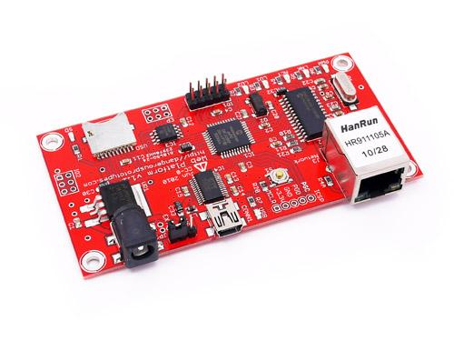

Assembled PIC 33F Web Platform, constructed from files and firmware posted by DangerousPrototypes.com.
Model:THM106B3P

PCB color will be RED. Web platform are currently being manufactured and should start shipping in January, 2010. This picture shows a hand soldered prototype, the manufactured version will differ slightly.
The warnings and wrong operations possible cause dangerous.
It is the schematic, the circuit about Eagle resource like .pdf should linked here in order to avoid memory exhausted.
May include key specification and other specifications.
Includes important code snippet. Demo code like :
Demo code { }
The projects and application examples.
All the components used to produce the product.
Please list your question here:
If you have questions or other better design ideas, you can go to our forum or wish to discuss.
| Revision | Descriptions | Release |
|---|---|---|
| v1.1 | Updated release | Dec 11, 2009 |
Bug Tracker is the place you can publish any bugs you think you might have found during use. Please write down what you have to say, your answers will help us improve our products.
The Additional Idea is the place to write your project ideas about this product, or other usages you've found. Or you can write them on Projects page.
Click here to buy: http://www.seeedstudio.com/depot/web-platform-v11-assembled-p-582.html?cPath=174.
Other related products and resources.
This documentation is licensed under the Creative Commons Attribution-ShareAlike License 3.0 Source code and libraries are licensed under GPL/LGPL, see source code files for details.
Links to external webpages which provide more application ideas, documents/datasheet or software libraries
Copyright (c) 2008-2016 Seeed Development Limited (www.seeedstudio.com / www.seeed.cc)